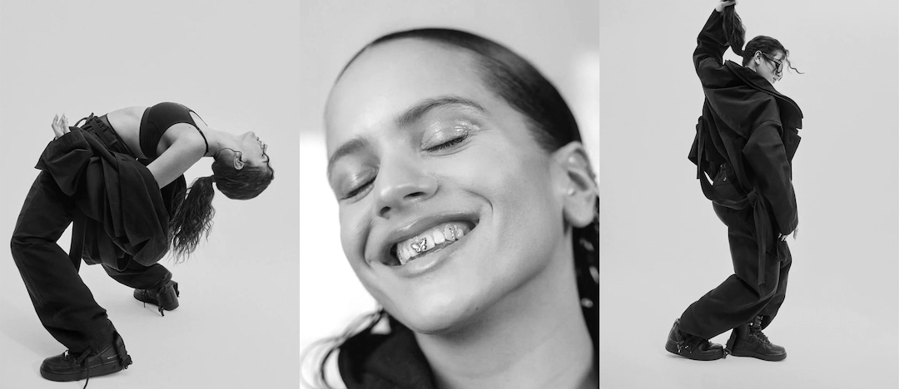

I
n 2018, Spanish flamenco singer Rosalía was at a crossroads. She had started work on her second album, as a baccalaureate project for her graduation from the Catalonia College of Music. Funding the project herself, Rosalía collaborated with producer and songwriter Pablo Diaz-Reixa, aka El Guincho, and Spanish rapper C. Tangana, to create an adventurous mixture of flamenco, pop, Latin, hip-hop, R&B, and other music styles.
However, by the time the recordings were completed, Rosalía had run out of money. She could either finish her baccalaureate project as cheaply as possible, or she could aim for the sky. She chose the latter and the results were spectacular. The resulting album, El Mal Querer, released in November 2018, became her international breakthrough. It earned her a Grammy Award for Best Latin, Rock, Urban or Alternative Album, plus four Latin Grammy Awards.
The key to the enormous success of the album lay in the lead single, “Malamente,” a minimalist, ultra-catchy mashup of flamenco, pop and urban music. It went platinum in several countries, including Spain and the US, and was honored with five Latin Grammy Awards, including Record of the Year, Song of the Year, Best Short Form Music Video, Best Urban Fusion Performance and Best Alternative Song, winning the last two. “Malamente” was a huge critical and cultural success, and became one of the most influential Latin songs of the 2010s.
1. INTRODUCING ROSALIA
While it’s difficult to gauge the specific impact of any one of the people involved in the making of “Malamente” and El Mal Querer, Rosalía’s international breakthrough might well not have happened were it not for the contributions of one star participant. Exactly why Rosalía, in reaching for the sky, reached for the services of elite mixer Jaycen Joshua is unknown. But it is likely that his mix of the original version of Luis Fonsi’s monster hit “Despacito” - done a year earlier - alerted her to Joshua’s talent for mixing Latin music.
By 2018, Joshua was well-established as one of the world’s leading mixers. After stints as an A&R man and in advertising, he became an intern at Larrabee Studios in 2003. He eventually graduated to assist Dave Pensado, at the time one of the world’s top mixers. The two hit it off, and eventually collaborated on equal terms under the name The Penua Project. Today, in 2023, Joshua has won 3 Grammy Awards, and his credits include Beyoncé, Nicki Minaj, The Weeknd, Pop Smoke, Ed Sheeran, Rihanna, and many more.
Back in 2018, Joshua was mixing tracks for the likes of Rita Ora, The-Dream, BTS, NAV and Future. One day an unusual suggestion landed on his desk. In a video with Mix With The Masters, Joshua recalls the first time he heard of Rosalía. Apparently, Latin star Juanes and Rosalía had become friends, and the Columbian singer had alerted his manager, Rebecca Leon to her talents.
Joshua recalls, “Rebecca said to me, ‘I have a unicorn for you.’ And I said, ‘Well, who is that?’ She said, ‘Rosalía.’ I said, ‘Okay, can I hear the music?’ The first song and the only song they played was ‘Malamente,’ and I felt like a shock wave hit me because I’d never heard anything like that. To infuse something as creative and historic as flamenco with hip-hop drums… at the time, people couldn’t process it.”
“I hadn’t met the unicorn yet, but I decided to mix the song anyway. I jumped on the chance to be a part of Rosalía’s vision and dream. She wasn’t signed to a label, and basically financed everything herself. So I said, ‘Since you brought me the gift of this song, let me return the gift and do this mix for you for no charge.’ They were so appreciative and happy and crying at the same time. And I put my heart and soul into it.”
2. SONG OVERVIEW
Joshua ended up mixing the whole of El Mal Querer, starting with “Malamente.” The song has a very minimalist arrangement, featuring only Rosalia’s lead, background vocals, and handclaps augmented by a Herreño drum (tambora), an 808, a rimshot, and a few synths tracks, courtesy of producer Pablo Diaz-Reixha, who also sang some of the ad libs vocals.
“The first part of my mix process,” comments Joshua, “was understanding how important the claps were. In flamenco, claps are everything. When you pay attention to the claps in this track, you feel a rhythmic pattern that's both perfectly in time and not in time, and not forced. I took longer to truncate the claps and find that pocket, because the mix is so minimal. She did everything by hand, and I wanted to find that groove because there’s no hi-hat, there’s no other percussion. The clap, and the tambora, are the entire rhythm section of the track. The whole vibe of the record, the whole purpose, was to make sure that people didn’t stop nodding to a flamenco record!”
“I felt like a shock wave hit me because I’d never heard anything like it.”
“So I took my time with that, and once I got the claps right, I immediately bypassed everything and went to Rosalía’s vocal, which is the foundation of her super stardom. In this track, the claps and her vocal are everything. Her lead vocal is very seductive, and I didn’t want to just lay a bunch of standard reverb and delays on it that are linear all the way through. I wanted a moving vocal where each syllable or maybe each word or even chorus has a different texture, a different vibe, to make them explode through the track.”
“There are six tracks with these ‘explosions.’ I had a lot more, but Rosalía reminded me of the intimacy that she wanted on the record. So I had to dial some of them back and I started to understand her perspective of the record. She wanted something really intimate, and when we did do the explosions on certain words and ad libs and catch phrases, each became a moment, instead of a bunch of moments.”
3. INTIMATE RECORDINGS
Joshua’s former mentor, Dave Pensado, is also present in the Mix With The Masters series, and offers a number of pertinent observations and questions. Pensado notes, “the groove is spectacular. The first time I heard the song and the claps, the way you truncate them, is just priceless. The groove is this close to monotonous, but you made it hypnotic. And that’s a hard thing to do. And you used the ad libs in a really amazing way. They have tons of extra effects on them which put them back in the mix, and make Rosalia’s lead vocal sound farther to the front. Was that intentional?”
“Absolutely,” confirms Joshua. “But first of all, I’d like to stress, sometimes you have to get out of your own way, especially when you get a record that’s pretty much there. I didn’t get goosebumps when I first heard this record for no reason. A lot of people can become too heavy-handed, but sometimes you just have to step back and understand you were given a gift and just let that gift fly on its own, and you just help it in certain areas.”
“It’s always best that the people you’re working with hear the music the same way that you do. Rosalía and I did not have a dialogue before I mixed the record, but fortunately, I got lucky in that she and I heard the record the same. When she called me after my first mix, she was ecstatic, and her notes were very minimal. The end result is pretty much the director’s cut.”
Joshua adds that his main focus, in addition to the claps and the vocals, was to “bring low end and credibility to the record. To me it sounds like Rosalía grew up on hip-hop, and I believe one of the producers, Pablo, who is a genius, was influenced by hip-hop culture as well. I think that was a major factor for them to involve someone like me, who has a solid grip of hip-hop culture.”
4. GROWING UP ON HIP HOP
Joshua’s original mix was performed on an SSL desk, but for the Mix With The Masters series he re-created it inside the box, to be able to demonstrate the techniques he used. In the video Joshua is able to give a much more complete and comprehensive breakdown of his mix than is possible in this article, but below a few highlights of some of the most essential aspects, first returning to his treatments of the lead vocal and ad libs.
“One of my primary things is that I want to make sure that a vocal is heard before you hear any reverb or delay. I love hitting with the dry vocal first. Sometimes you put a short room or a slap on it, but it’s primarily dry without any wet reverb, and then maybe 20 to 40 to 60ms later, there’s a group of reverbs adding the texture, vibe and ambiance.”
The lead vocals in the “Malamente” session are grouped in two aux tracks, VRS Lead and HK Lead. Both tracks feed into what Joshua calls his "basic vocal chain". It consists on the inserts of the Avid Lo-Fi, Waves RVox, Fabfilter Pro-Q (x2), McDSP MC404, Waves CLA Vocals, Waves C6 multi-band compressor (x3), and FabFilter Pro-DS. There also are sends to five aux effects tracks: AirFrance, Rap Verb, EMTCrispy, Lex Hall and Chamber.